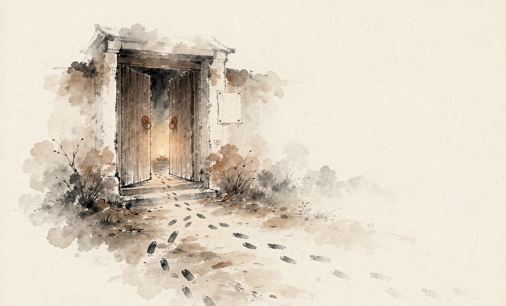
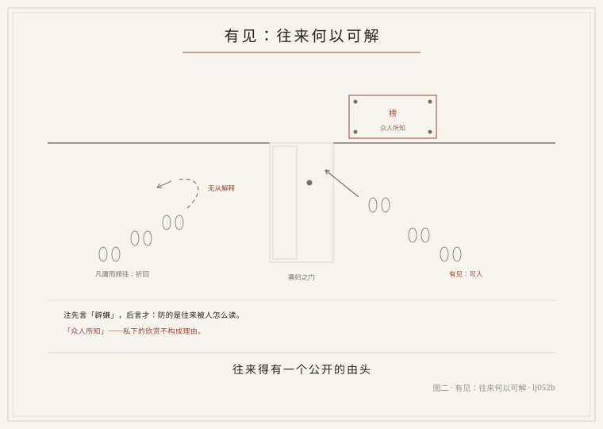

曲礼上 · 一·五十四 · 第 52 课
寡妇的儿子，若没有「可见」之处，不与他为友。所谓可见，是奇才卓然，众人都知道。
说什么事：寡妇之子，非有见焉，弗与为友。
落在哪一层：教。上节讲婚姻之禁，此节讲交友之慎。
为何编在此位：一·五十三讲「别」的底线，此节讲「嫌」的处置；嫌不可避，只可使之有解。
【经】寡婦之子，非有見焉，弗與為友。
寡妇之子 无夫之妇所生之子。疏：「寡妇无夫。」
非有见焉 郑注：「辟嫌也。有见，谓有奇才卓然，众人所知。」疏：「见谓奇才卓异可见也。」
弗与为友 疏：「若其子有奇才异行者，则己可与之为友。若此子凡庸，而己与其往来，则于寡妇有嫌也。」
寡妇的儿子，若没有卓然可见的才行，不与他结交。
此节不是不许交友，是把交友的门槛抬到「众人皆知」。才行可见，往来就有解释；凡庸而频往，嫌疑无处安放。
第一层 「辟嫌」二字 注先说辟嫌，后说才。可见这一条防的不是那儿子，是「往来这件事会被人怎么读」。礼在此承认：世上有嫌，避不掉，只能处置。
第二层 「有见」是公开可验 注给的标准极清楚：「奇才卓然，众人所知」。不是你觉得他好，是众人知道他好。私下的欣赏不构成理由，公开的才行才构成理由。
第三层 凡庸则不友 疏把反面说尽：凡庸而往来，则「于寡妇有嫌」。所以此条不是势利，是把「无法解释的往来」减到最少。
第四层 嫌在谁身上 嫌落在寡妇，不落在交友者。所以退一步，是替对方留清名，不是自保。这一点最容易被读反。
与今日何干 今日仍有这种处境：一个独居者的家门，来往频繁就会被议论。此节给的法子是：让往来有公开的理由——共事、共学、共事由，而不是「常来看看」。
| 左 | 右 |
|---|---|
| 寡妇之子，非有见焉，弗与为友 | 辟嫌也 |
| 有见 | 奇才卓然，众人所知 |
| 有奇才异行，则可与为友 | 凡庸而往来，则于寡妇有嫌 |
| 嫌在寡妇 | 故交友者退 |
| 所戒者为「为友」 | 不及救济、共事、问病 |
| 今日之法 | 使往来有公开之由 |

